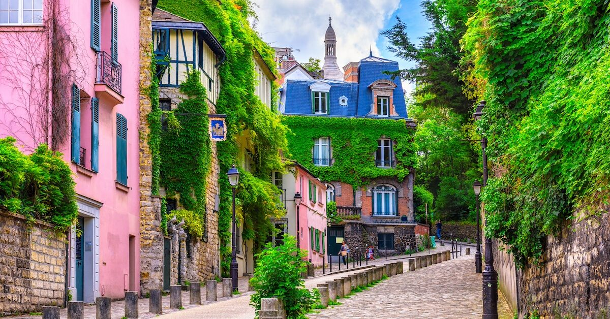

Explore Paris
As one of the most visited cities in the world, Paris is a top choice for studying in Europe.
Ancient History
Every footstep in Paris comes with a story (and often a very old one!).
From the Latin Quarter—home to the Sorbonne— to Notre Dame Cathedral, you will connect with monuments built centuries ago.


Lifestyle
Paris also lets you experience a classic European way of living.
After a busy week of studying, relax at a café in the steep streets of Montmartre, then enjoy a sunny afternoon in one of the city’s public parks.
